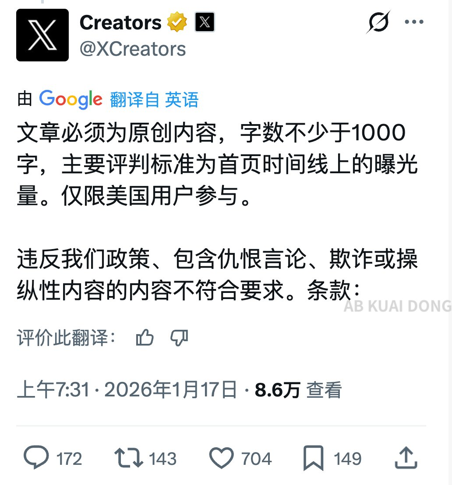

奶昔🥤
@realNyarime
@_FORAB 仅限美国用户参与，意味着其他国家的用户（x

AB Kuai.Dong
@_FORAB
X 官方确认，迈入 2026 年后，给 X 上创作者奖励增加了一倍金额，同时他们承认在调整算法，打击不真实的互动和帖子刷量行为。
在前几天，X 封禁掉所有嘴撸平台的接口 API 后，X 官宣未来 2 周，要选拔热度最高的一篇文章，给予创作者 100 万美金奖励。
要求为原创内容，不少于 1000 字的文章。 https://t.co/wIoB4aQ557 https://t.co/nS6hy3wmJc